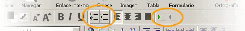
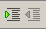
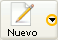
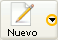

La base>>Texto - Listas

Avanzaremos ahora un paso más en la panorámica sobre los recursos para organizar y dar formato visual al texto.
Las listas nos van a servir para ir organizando la información de acuerdo con alguno de los siguientes formatos:
| Listas ordenadas | Listas desordenadas | Listas de definición |
|---|---|---|
Los elementos se presentan numerados |
Los elementos van precedidos por un "boliche" |
Presentan términos y definiciones con diferente tabulación |
|
|

Veremos en primer lugar los dos primeros tipos, cuya única diferencia estriba en el símbolo que precede a cada elemento. Para iniciar la creación de este tipo de listas basta pulsar el botón que las identifica en la barra de formato.
Una forma alternativa para crear una lista consiste en tomar una serie de líneas que ya estén escritas, seleccionarlas y hacer clic en uno de los botones de listas. De este modo, cada párrafo se convierte automáticamente en un elemento de la lista. Posteriormente se pueden modificar los niveles de la lista a nuestro gusto.
También en la misma barra, tras los iconos de alineación del texto, aparecen otros dos iconos que nos van a permitir ir aumentando o disminuyendo los niveles dentro de la lista. Llamamos nivel a la tabulación que se aplica a cada ítem de la lista y que nos va a permitir establecer visualmente las categorías y las dependencias de unos elementos respecto a los otros.
La forma de introducir nuevos elementos en la lista, una vez que la hemos empezado consiste sencillamente en pulsar la tecla , con lo que se añade a la lista otro ítem del mismo nivel que el precedente. (Si queremos variar el nivel, hacia la derecha o hacia la izquierda pulsaremos el icono correspondiente  ).
Una forma muy sencilla para obtener un nivel situado
más a la derecha es la pulsación de la tecla . Para retornar
al nivel precedente bastará con una doble
pulsación sobre.
Cuando nos encontramos en el primer nivel de la lista esta doble
pulsación servirá también para
finalizar la introducción de elementos en la misma.
También podemos volver a pulsar el botón con el
que la iniciamos, que hasta ese momento habrá permanecido
"presionado".
 o el icono  , y comprobamos
los resultados.
o el icono  , y comprobamos
los resultados.Las listas de definiciones no tienen un icono específico para su creación, aunque podemos emplear un truco para no tener que recurrir a escribir las etiquetas a mano. Para ello...
Habrá que recurrir al menú formato término
para el término que deseamos definir y formato
para la definición del
mismo. Comprobaremos que mientras que el título permanece
alineado en el margen izquierdo el texto salta a la primera
tabulación.
término
para el término que deseamos definir y formato
para la definición del
mismo. Comprobaremos que mientras que el título permanece
alineado en el margen izquierdo el texto salta a la primera
tabulación.
 Realmente
no será necesario especificar el salto entre el
término y la definición, ya que al indicar que un
texto es un término de una lista de definiciones la
pulsación de la tecla hace
que automáticamente se genere la etiqueta para la
definición del mismo. Si necesitamos que la
definición esté compuesta por varios
párrafos habría que pulsar + .
Realmente
no será necesario especificar el salto entre el
término y la definición, ya que al indicar que un
texto es un término de una lista de definiciones la
pulsación de la tecla hace
que automáticamente se genere la etiqueta para la
definición del mismo. Si necesitamos que la
definición esté compuesta por varios
párrafos habría que pulsar + .
Para finalizar una lista de este tipo podremos hacerlo
seleccionando
en el
menú formatotérmino
o, más sencillamente, con una doble pulsación de
la tecla tras
completar la última definición de la lista.
Habrás comprobado que en las listas con viñetas iba variando la viñeta que precedía a cada uno de los niveles. Sin embargo, en las numeradas vemos que los diferentes niveles se van alineando con un mayor grado de tabulación a la derecha, pero no cambian el símbolo que los precede. Es posible que nos resulte útil para presentar la información con mayor claridad que dicho símbolo se modifique en cada nivel.
Vamos a verlo con un ejemplo práctico.
 y cuando nos informe de que debemos guardar el archivo
aceptamos y le damos el nombre actividad13.html
y cuando nos informe de que debemos guardar el archivo
aceptamos y le damos el nombre actividad13.htmlEs posible que la práctica anterior te haya suscitado algunas dudas acerca del comportamiento de los cambios de numeración cuando las condiciones de la lista se hacen algo más complejas... ¡Ánimo, dale rienda a tu espíritu de investigación!
Vamos a ver ahora otra posibilidad interesante: combinar los diferentes tipos de listas entre sí.
No es muy habitual mezclar la lista de definiciones con los otros tipos, pero sí puede resultar útil anidar listas desordenadas dentro de otras ordenadas o viceversa.
Lo veremos con un ejercicio semejante al anterior.